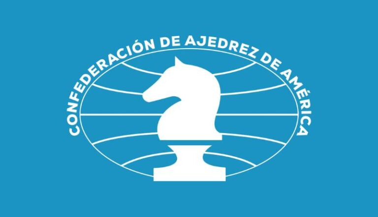
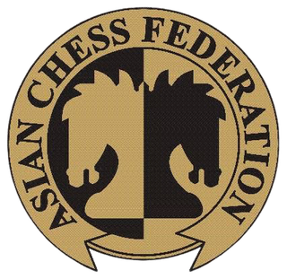
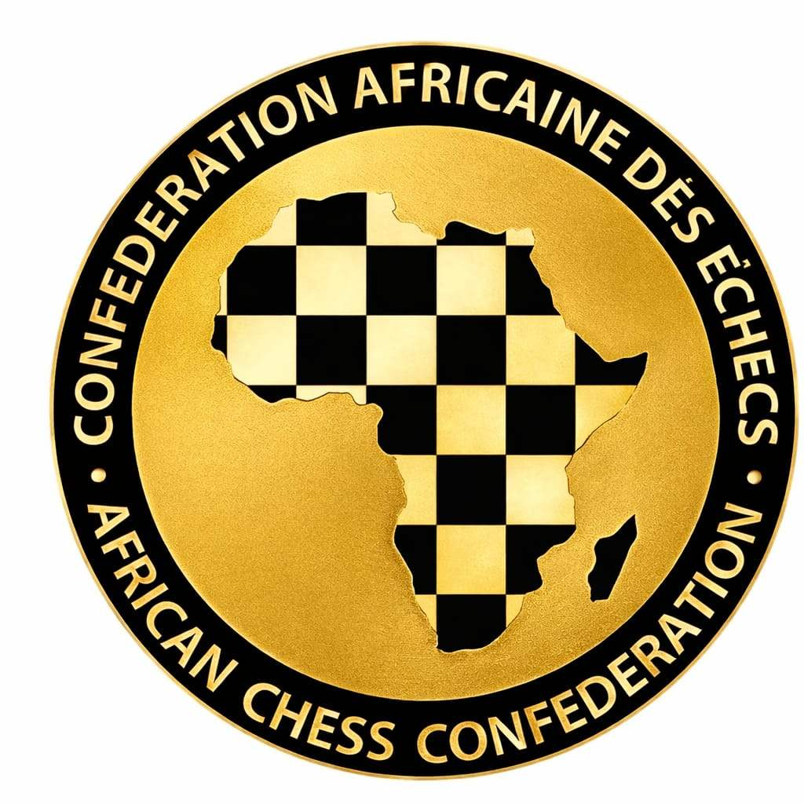
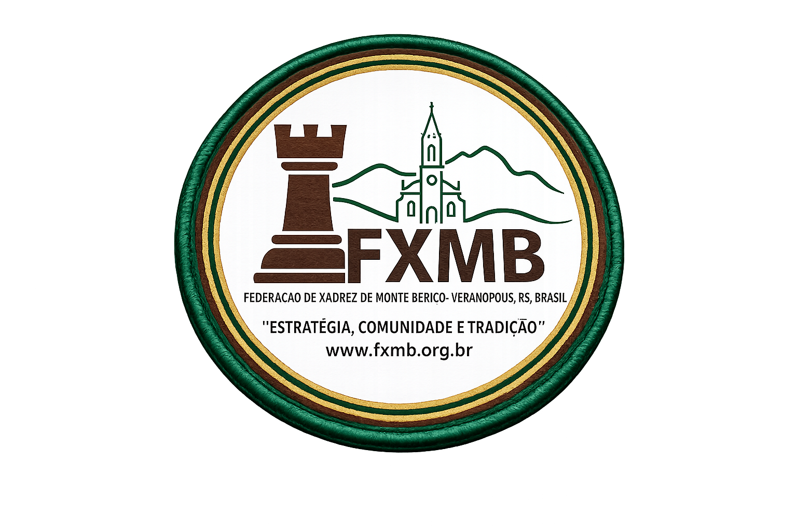

Conheça as Federações do Xadrez
Bem-vindo ao maior ponto de encontro da comunidade enxadristica internacional. O xadrez é uma linguagem universal que ultrapassa fronteiras, culturas e gerações. Por trás de cada grande mestre, de cada torneio local e de cada rating conquistado, existe uma estrutura que apoia, organiza e fomenta o nosso esporte: as federações nacionais. Esta página foi criada com um propósito claro: conectar você ao coração administrativo do xadrez mundial. Seja você um jogador profissional em busca de regulamentos, um organizador de torneios procurando parcerias, ou um entusiasta querendo saber como se filiar ao clube do seu país, este é o seu ponto de partida.
O Que Você Encontrará Aqui?
Navegue pelo nosso mapa interativo ou utilize a lista alfabética abaixo para explorar o ecossistema do xadrez global. Para cada federação listada, reunimos as informações mais importantes:
• Contatos Oficiais: Links diretos para os sites oficiais, e-mails e redes sociais.
• Filiação Internacional: Status de associação à FIDE (Federação Internacional de Xadrez) e confederações continentais (como a CCA, ECU, Asian Chess Federation e African Chess Confederation).
Mantenha a Comunidade Atualizada
O mundo do xadrez se move rápido, assim como uma linha tática afiada. Se você notar que algum link mudou, que uma federação alterou seus dados de contato ou se quiser sugerir uma nova adição, entre em contato conosco através do nosso formulário de suporte. Prepare a sua abertura, escolha o seu destino e explore o xadrez sem fronteiras!
FIDE - Fédération Internationale des Échecs
Fundada em 20 de julho de 1924, em Paris, a FIDE (Fédération Internationale des Échecs, ou Federação Internacional de Xadrez) é a entidade máxima que governa o xadrez em escala global. Reconhecida pelo Comitê Olímpico Internacional (COI), a organização nasceu sob o lema em latim "Gens Una Sumus" ("Somos Uma Só Família"), refletindo a ambição de unir nações e culturas através das 64 casas do tabuleiro.
Atualmente sediada em Lausanne, na Suíça, a FIDE atua como o poder executivo, legislativo e judiciário do xadrez mundial. Suas principais responsabilidades incluem:
• Regulamentação Oficial: É a FIDE quem dita as Leis do Xadrez, determinando desde o comportamento esperado dos jogadores até o funcionamento dos relógios e as regras de competições.
• O Sistema de Rating Elo: A federação administra o ranking mundial, atualizado mensalmente, que mede o nível de força de centenas de milhares de enxadristas ao redor do globo.
• Concessão de Títulos Vitais: É a única entidade que pode outorgar os títulos honoríficos mais cobiçados do esporte, como Mestre Fide (MF), Mestre Internacional (MI) e o grau máximo de Grande Mestre (GM).
• Grandes Eventos: A FIDE coordena o ciclo do Campeonato Mundial (incluindo o Torneio de Candidatos) e as Olimpíadas de Xadrez, um evento massivo que reúne delegações de mais de 180 países.

Federações Continentais
| Federação | Ano de Fundação | Ano de Filiação à FIDE | Quantidade de Membros |
|---|---|---|---|
| European Chess Union - ECU | 1985 | 1985 | 54 Membros |
 FIDE America - CCA |
1970 | 2002 | 47 Membros |
 Asian Chess Confederation - ACF |
1990 | 1990 | 52 Membros |
 African Chess Confederation - ACC |
1976 | 1976 | 48 Membros |
Federações Nacionais Filiadas à FIDE
| Federação | Ano de Fundação | Ano de Filiação à FIDE | Federação Continental |
|---|---|---|---|
| 1984 | 1985 | ACF | |
| 1947 | 1947 | ACC | |
| 1933 | 1956 | ECU | |
| 1877 | 1926 | ECU | |
| 1973 | 1974 | ACC | |
| 1967 | 1968 | ECU | |
| 1979 | 1979 | FAE | |
| 2017 | 2018 | CCA | |
| 2009 | 2016 | ACF | |
| 1922 | 1924 | CCA | |
| 1927 | 1992 | ACF | |
| 1946 | 2000 | CAA | |
| 1922 | 1939 | ACF | |
| 1920 | 1926 | ECU | |
| 1992 | 1992 | ECU | |
| 1974 | 1974 | CAA | |
| 1982 | 1982 | ACF | |
| 1974 | 1979 | ACF | |
| 1983 | 1983 | CAA | |
| 1992 | 1992 | ECU | |
| 1920 | 1924 | ECU | |
| 2008 | 2021 | CAA | |
| 1976 | 1976 | CAA | |
| 1938 | 1939 | CAA | |
| 1992 | 1992 | ECU | |
| 1982 | 1982 | ACF | |
| 1924 | 1928 | CAA | |
| 1964 | 1980 | ACF | |
| 2023 | 2023 | ECU | |
| 2024 | 2025 | ACC | |
| 1997 | 1999 | ACC | |
| 2004 | 2004 | ACF | |
| 2016 | 2016 | ACC | |
| 2008 | 2008 | ACC | |
| 2000 | 2000 | ACF | |
| 1872 | 1924 | CCA | |
| 1985 | 1985 | ACF | |
| 1992 | 1992 | ACF | |
 Chade - ChCF Chade - ChCF |
2019 | 2020 | ACC |
| 1924 | 1939 | CCA | |
| 1986 | 1975 | ACF | |
| 1967 | 1961 | ECU | |
| 1924 | 1924 | CCA | |
| 2011 | 2011 | ACC | |
| 2006 | 2008 | ACF | |
| 1982 | 1984 | ACC | |
| 1936 | 1938 | CCA | |
| 1912 | 1992 | ECU | |
| 1918 | 1939 | CCA | |
| 2010 | 2010 | CCA | |
| 1903 | 1926 | ECU | |
| 1980 | 2016 | ACC | |
| 2021 | 2021 | CCA | |
| 1894 | 1980 | ACC | |
| 1974 | 1976 | CCA | |
| 1939 | 1939 | CCA | |
| 1976 | 1977 | ACF | |
| 2001 | 2016 | ACC | |
| 1884 | 1932 | ECU | |
| 1990 | 1924 | ECU | |
| 1990 | 1990 | ECU | |
| 1927 | 1927 | ECU | |
| 1939 | 1939 | CCA | |
| 1931 | 1991 | ECU | |
| 2006 | 2011 | ACC | |
| 1979 | 1979 | ACF | |
| 1953 | 1954 | ACF | |
| 1922 | 1924 | ECU | |
| 1921 | 1924 | ECU | |
| 1998 | 2007 | ACC | |
| 1976 | 1978 | ACC | |
| 1959 | 1986 | ACC | |
| 1877 | 1992 | ECU | |
| 2019 | 2020 | CCA | |
| 1948 | 1948 | ECU | |
| 2010 | 2011 | AFC | |
| 1966 | 1996 | CCA | |
| 1969 | 1969 | ECU | |
| 2025 | 2025 | ACC | |
| 2018 | 2020 | ACC | |
| 1970 | 1970 | CCA | |
| 1985 | 2018 | CCA | |
| 1993 | 1993 | CCA | |
| 1960 | 1961 | ACF | |
| 1921 | 1924 | ECU | |
| 1973 | 1982 | ACF | |
| 2018 | 2020 | CCA | |
| 1970 | 1970 | ECU | |
 Ilhas Marshall - MICF Ilhas Marshall - MICF |
2025 | 2025 | ACF |
| 2008 | 2008 | ACF | |
| 1966 | 1966 | CCA | |
| 1974 | 1974 | CAA | |
| 1950 | 1956 | ACF | |
| 1950 | 1960 | ACF | |
| 1904 | 1924 | ECU | |
| 1950 | 1946 | ACF | |
| 1971 | 1972 | ACF | |
| 1912 | 1933 | ECU | |
| 1925 | 1930 | ECU | |
| 1935 | 1957 | ECU | |
| 1920 | 1924 | ECU | |
| 1969 | 1972 | CCA | |
| 1967 | 1968 | ACF | |
| 1931 | 1995 | ECU | |
| 1973 | 1974 | ACF | |
| 2025 | 2025 | ACF | |
| 1990 | 2016 | ECU | |
| 1979 | 1979 | ACF | |
| 2003 | 2004 | ACF | |
| 1924 | 1991 | ECU | |
| 2003 | 2012 | ACC | |
| 1957 | 1957 | ACF | |
| 2014 | 2016 | ACF | |
| 1974 | 1974 | ACF | |
| 1971 | 1985 | ECU | |
| 1929 | 1930 | ECU | |
| 1931 | 1946 | ECU | |
| 1988 | 1996 | ACF | |
| 1948 | 1991 | ECU | |
| 1980 | 1992 | ACC | |
| 1970 | 1974 | 1974 | |
| 1985 | 2004 | ACC | |
| 2007 | 2007 | ACF | |
| 1978 | 1978 | ACC | |
| 1923 | 1959 | ECU | |
| 1963 | 1966 | ACC | |
| 1978 | 1978 | ACC | |
| 1975 | 1975 | ACC | |
| 1972 | 1972 | CCA | |
| 1972 | 1990 | ACF | |
| 1993 | 1993 | ACC | |
| 1947 | 1992 | ECU | |
| 1949 | 1958 | ECU | |
| 1955 | 1955 | ACF | |
 Monte Bérico - FXMB |
2026 | 2026 | CCA |
| 1949 | 2007 | ECU | |
| 1991 | 1991 | ACC | |
| 2004 | 2016 | ACF | |
| 1989 | 1988 | ACF | |
 Nicarágua - FENANIC Nicarágua - FENANIC |
1961 | 1971 | 1971 |
| 2021 | 2021 | ACC | |
| 1975 | 1978 | ACC | |
| 1892 | 1948 | ACF | |
| 1914 | 1926 | ECU | |
| 2014 | 2016 | ACF | |
| 1970 | 1970 | ECU | |
| 1873 | 1924 | ECU | |
| 1957 | 1973 | ACF | |
| 2002 | 2005 | ACF | |
| 1932 | 1933 | ACF | |
| 1996 | 1964 | CCA | |
| 1976 | 1976 | ACF | |
| 1952 | 1984 | CCA | |
| 1941 | 1941 | CCA | |
| 1926 | 1926 | ECU | |
| 1935 | 1938 | CCA | |
| 1927 | 1927 | ECU | |
| 1976 | 1980 | ACC | |
| 1992 | 1992 | ACF | |
| 2010 | 2010 | ACC | |
| 1993 | 2008 | ACC | |
| 1954 | 1962 | CCA | |
| 1905 | 1924 | ECU | |
| 1925 | 1924 | ECU | |
| 1997 | 2013 | ACC | |
| 1992 | 1992 | ACF | |
| 1967 | 1984 | ECU | |
| 2018 | 2020 | CCA | |
| 2019 | 2020 | CCA | |
| 2003 | 2008 | ACC | |
| 2019 | 2021 | CCA | |
| 1978 | 1978 | ACC | |
| 1974 | 1980 | ACC | |
| 1992 | 2005 | ACC | |
| 1948 | 2006 | ECU | |
| 1949 | 1950 | ACF | |
| 1971 | 1972 | ACF | |
| 1987 | 1993 | ACC | |
| 1972 | 1978 | ACF | |
| 1986 | 1986 | ACC | |
| 2014 | 2016 | ACC | |
| 1917 | 1926 | ECU | |
| 1889 | 1924 | ECU | |
| 1955 | 1976 | CCA | |
| 1975 | 1978 | ACF | |
| 2003 | 2004 | ACF | |
| 1992 | 1992 | ACF | |
| 1984 | 2016 | ACC | |
| 2013 | 2016 | ACF | |
| 2012 | 2012 | ACC | |
| 2023 | 2023 | ACF | |
| 1936 | 1972 | CCA | |
| 1957 | 1958 | ACC | |
| 1992 | 1992 | ACF | |
| 1954 | 1962 | ECU | |
| 1991 | 1992 | ECU | |
| 1972 | 1978 | ACC | |
| 1926 | 1927 | CCA | |
| 1992 | 1992 | ACF | |
| 2022 | 2023 | ACF | |
| 1935 | 1952 | ACC | |
| 1965 | 1988 | ACF | |
| 1975 | 1975 | ACC | |
| 1979 | 1980 | ACC | |
| Roger |